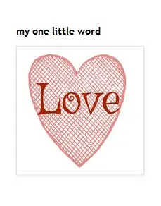

Since 2008, I’ve chosen a word to guide my new year. Selecting it involves prayer, as well as tuning into what might be needed most in the next 12 months.
Some years, I struggle with my “one word” selection, but this year, I thought of my friend Vicky Westra, a partner in bringing a word along in the new year.
For 2018, her “one little word,” as she called it, was “love.” There could be no better final word to surround a woman who loved well, was loved well in turn, and whose love continues to resound even after her death.

Vicky and I always excitedly shared our new-year word with one another soon after choosing it, so I naturally turned in mind to her as I pondered this year’s choice. The rapidity with which it came made me feel Vicky had helped.
Of the many gifts Vicky offered in our eight-year friendship, wisdom rises prominently. As much as love defined her life, so did wisdom. Her thoughtful approach to life, her other-focused thinking, her trust in God – all of these were wise qualities cultivated more richly in her suffering.
Looking ahead at two looming challenges in my life at this launch of 2019, wisdom will undoubtedly be an especially valuable gift. Though at 50, I’ve acquired some along the way, it seems we can never have enough.
In Scripture, we find this mind-blowing pronouncement on the topic from 1 Cor. 1:25: “For the foolishness of God is wiser than human wisdom, and the weakness of God is stronger than human strength.”
How easily we can think we are the wise, strong ones, and how freeing it can be to realize true wisdom comes in staying near the one who does not just teach but is wisdom.
In seeking wisdom in the year ahead, I don’t have to rely on myself, nor expect the world to provide all the answers, but simply lean on wisdom personified in the Lord.
At Christmas, we recall especially how God, who is wisdom, came to us not as an overpowering czar, but a humble, poor, weak babe.
Why? Spiritual master Jean-Nicolas Grou once wrote, explaining, that God wanted to teach us, from the moment we give ourselves to God, that “we must go back to the smallness and the weakness and the foolishness of a little child; that all our past life must be blotted out, and that we must enter a new state of existence, a new life, of which God alone must be the principle.”
In the spiritual life, things can seem a little backwards; the weak are strong; the foolish in ways of the world are the wise in ways of the soul.
And so, as I collect and wish for true spiritual wisdom, I extend that to each of you, as we strive to become more dependent on God, wisdom incarnate, in this brand-new year.
[For the sake of having a repository for my newspaper columns and articles, I reprint them here, with permission, a week after their run date. The preceding ran in The Forum newspaper on Jan. 5, 2019.]